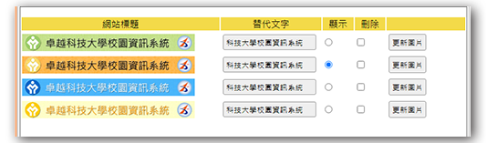

次選單功能是本題組中較為複雜，但說明卻相對模糊的功能，這裏我們採用較直覺的做法來解題，依照題目給出的參考圖來看，題目希望次選單的新增/修改/刪除都在彈出視窗中完成。
由於一個畫面的表單中要同時具有增改刪查的功能，因此我們無法延用先前製作的API來處理次選單的功能，所以次選單的API單獨一支程式來處理，因此我們在 ./back/menu.php 的彈出視窗的按鈕參數上採用指定路徑檔名的方式來處理，而不是和先前幾個功能一樣採用帶入資料表變數的方式。
在API的部份，我們透過表單中的name屬性命名(text vs text2 ; href vs href2)，區分出那些資料是屬於新增的，而那些資料是屬於改和刪的，這邊是較複雜的地方，需要花點時間理解一下。
- 修改
./back/menu.php 中編輯次選單按鈕連結及參數
- 在
./modal/ 目錄下建立一個 submenu.php 的檔案做為編輯次選單的主要畫面
- 編輯
./modal/submenu.php 以符合參考圖的呈現格式
- 在 更多次選單 上加入
onclick 事件呼叫 more() 程式來動態產生輸入欄位
- 新增用的欄位名應該要和編輯用的欄位名不一樣，才能做識別(ex. text vs text2)
- 新增
./api/submenu.php 撰寫編輯次選單的功能
- 依照POST內容的欄位名稱來決定要執行的是新增或是修改或是兩者同時都有。
- 這邊我們採用表單送出的行為(submit)，也就是整個頁面會跳去
./api/submenu.php 處理完再跳回 admin.php?do=menu，跳回來時不會再彈出視窗，但是可以看到次選單的數目改變。
- 如果希望保留彈出視窗，那麼就要改用AJAX的方式來撰寫程式。
- 記得要把主選單的id一併送出，才知道是誰的次選單，這邊我們直接在
action屬性中加上main=id的方式來傳遞主選單id
- 修改
./back/menu.php 中列表主選單的條件(["parent"=>0])
- 最後補上次選單數的計算及顯示(使用$Menu->count([‘parent’=>$id])函式來計算次選單數)
modal/submenu.php
1
2
3
4
5
6
7
8
9
10
11
12
13
14
15
16
17
18
19
20
21
22
23
24
25
26
27
28
29
30
31
32
33
34
35
36
37
38
39
40
41
42
43
44
45
46
47
48
49
50
51
52
53
54
55
56
57
58
59
60
61
62
| <!--因為是獨立的功能，而且會使用到資料表，所以要先include base.php進來使用-->
<?php include_once "../api/base.php";?>
<h3>編輯次選單</h3>
<hr>
<!--直接在action中加入主選單的id傳遞給api-->
<form action="api/submenu.php"
method="post"
enctype="multipart/form-data">
<table id="sub">
<tr>
<td>次選單名稱</td>
<td>次選單連結網址</td>
<td>刪除</td>
</tr>
<?php
$rows=$Menu->all(['parent'=>$_GET['id']]);
foreach($rows as $row){
?>
<tr>
<td>
<input type="text" name="name[]" value="<?=$row['name'];?>">
</td>
<td>
<input type="text" name="href[]" value="<?=$row['href'];?>">
</td>
<td>
<input type="checkbox" name="del[]" value="<?=$row['id'];?>">
</td>
<input type="hidden" name="id[]" value="<?=$row['id'];?>">
</tr>
<?php
}
?>
</table>
<div>
<input type="submit" value="修改確定">
<input type="hidden" name="parent" value="<?=$_GET['id'];?>">
<input type="hidden" name="table" value="Menu">
<input type="reset" value="重置">
<!--建立onclick行為，會去呼叫more函式-->
<input type="button" value="更多次選單" onclick="more()">
</div>
</form>
<script>
function more(){
let html=`<tr>
<td><input type="text" name="add_name[]" ></td>
<td><input type="text" name="add_href[]" ></td>
<td></td>
</tr>`
$("#sub").append(html);
}
</script>
|

api/submenu.php
1
2
3
4
5
6
7
8
9
10
11
12
13
14
15
16
17
18
19
20
21
22
23
24
25
26
27
28
29
30
31
32
33
34
35
36
37
38
39
40
41
42
43
44
45
46
47
48
49
50
51
52
53
54
55
| include_once "base.php";
if(isset($_POST['id'])){
foreach($_POST['id'] as $idx => $id){
if(isset($_POST['del']) && in_array($id,$_POST['del'])){
$Menu->del($id);
}else{
$row=$Menu->find($id);
$row['name']=$_POST['name'][$idx];
$row['href']=$_POST['href'][$idx];
$Menu->save($row);
}
}
}
if(isset($_POST['add_name'])){
foreach($_POST['add_name'] as $idx => $name){
if(!empty($name)){
$Menu->save(['name'=>$name,
'href'=>$_POST['add_href'][$idx],
'parent'=>$_POST['parent'],
'sh'=>1
]);
}
}
}
to("../back.php?do=menu");
|